ERP Crystal
Itération 4 — Sprint finale
28 mai – 22 juin 2026
Antony Burlet · Billy Hallé · William Peck · Nicolas Michaud
Objectifs du Sprint 4
Un ERP fonctionnel de bout en bout — une API .NET, des permissions unifiées, un portail employé.
- Phase 1 — Fin du mock, API réelle
- Phase 2 — Rôles dynamiques + CASL
- Phase 3 — Portail
/mon-espace - Phase 4 — Refactorisation de l'ERP
Suivi de progression
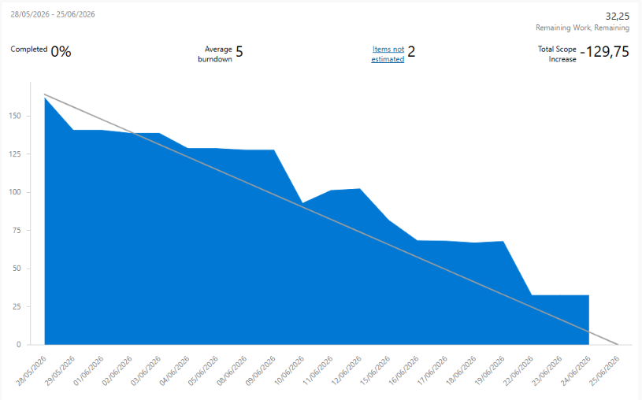
- ✔ 5 phases livrées
- ✔ 4 rôles (Admin, Gérant, Assistant, Employé)
- ✔ Pointage punch-in / punch-out
Antony Burlet
Rôle : Développeur Full Stack / Ressources humaines
Focus principal de l'itération 4 :
Développer et stabiliser les écrans RH liés aux feuilles de temps, aux fiches de paie et à la planification, en les reliant aux données réelles et aux permissions de l'application.
📋 Travail couvert
-
✓Feuilles de temps
Consultation et suivi des feuilles liées aux employés, aux heures travaillées et aux statuts.
-
✓Fiches de paie
Affichage des informations de paie et cohérence avec les données RH disponibles.
-
✓Planification
Visualisation des quarts de travail et intégration avec les profils employés.
🧩 Parcours fonctionnels
Planification
- • Consultation des horaires
- • Quarts associés aux employés
- • Base pour le portail employé
Feuilles de temps
- • Liste consultable par les rôles autorisés
- • Statuts visibles pour le suivi
- • Lien avec les heures travaillées
Fiches de paie
- • Affichage des montants RH
- • Accès limité selon les permissions
- • Cohérence avec les données employé
🕒 Feuilles de temps
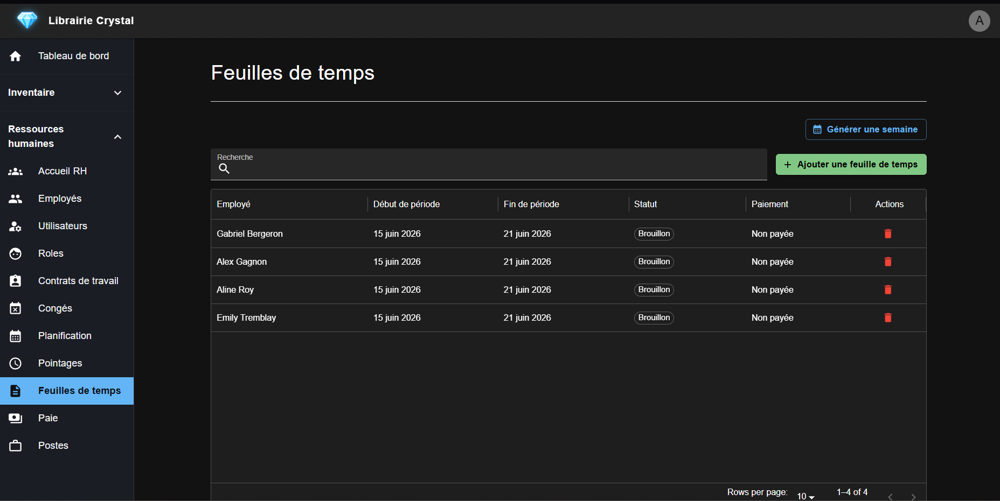
🕒 Détail d'une feuille de temps
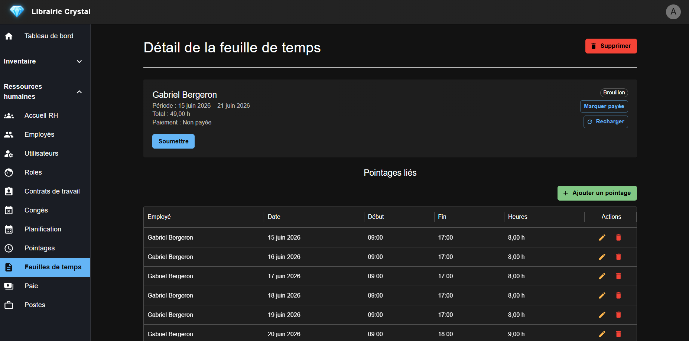
💵 Fiches de paie
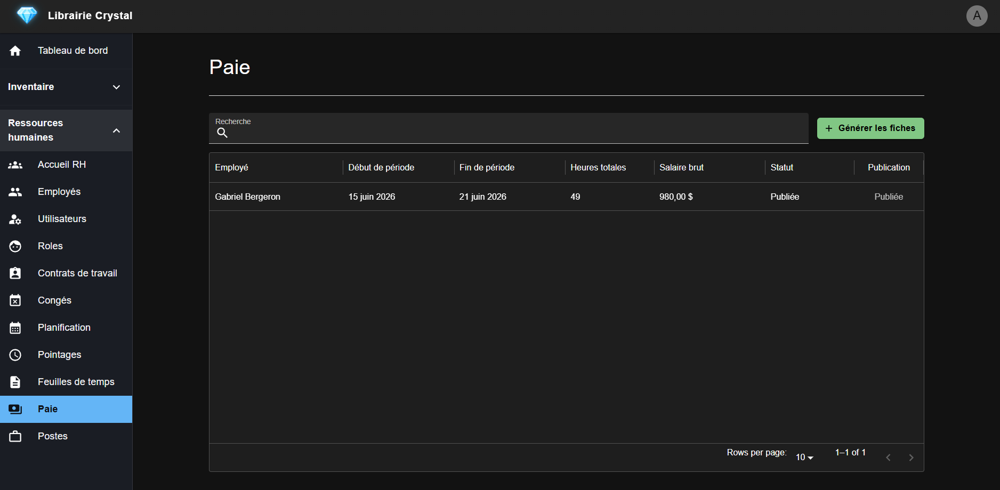
📅 Planification
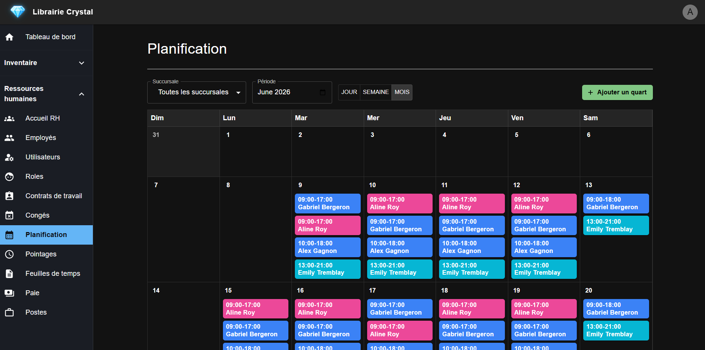
🚀 Défis
Défis rencontrés
- • Comprendre le lien entre planning, heures et paie
- • Garder les écrans cohérents avec les contrats backend
- • Gérer les accès selon les rôles RH
- • Éviter les incohérences entre données employé et données gestionnaire
Solutions appliquées
- • Vérification des endpoints RH utilisés par les écrans
- • Tests manuels des parcours feuilles de temps, paie et planning
- • Ajustements progressifs des composants frontend
- • Utilisation de l'IA pour clarifier les liens métier
Billy Hallé
Focus itération 4
Du prototype mocké vers une application unifiée et sécurisée.
- Alignement API (.NET)
- Permissions dynamiques
- Scoping employé
- Pointage
- Rôles unifiés (
DynamicRoleId)
Alignement API (.NET)
Une seule source de vérité — fin de json-server et des données simulées.
Avant — mock
// apiBaseUrl.ts
export const USE_MOCK_API = true;
// service
if (USE_MOCK_API) {
return fetch("http://localhost:3001/items");
}Après — API Crystal
// apiBaseUrl.ts
export const USE_MOCK_API = false;
export const API_URL = `${AUTH_URL}/api`;
// service
return apiClient.get(`${API_ITEMS_URL}`);Swagger — test des routes en direct :

Permissions dynamiques
Même modèle côté API et UI — configurable en base de données.
Avant — hybride
// Rôle Identity + presets locaux
if (user.role === "Admin") {
showMenu("rh");
}
// json-server pour les rôles customAprès — unifié
// Backend
[RequirePermission("read", "employee_profile")]
// Frontend (CASL)
GET /api/users/me/permissions
→ defineAbilityFor(user, permissions)Scoping employé
Chaque employé ne voit que ses données RH.
EmployeeScopeService— filtre backend centralisé- Congés, quarts, pointages, feuilles de temps scopés
- Portail
/mon-espacepour l'employé - Inventaire limité à la succursale de l'utilisateur
Pointage
- Widget punch-in / punch-out sur le dashboard
PunchEligibilityService— validation du quart liéBusinessClock— règles métier (fuseau Toronto)
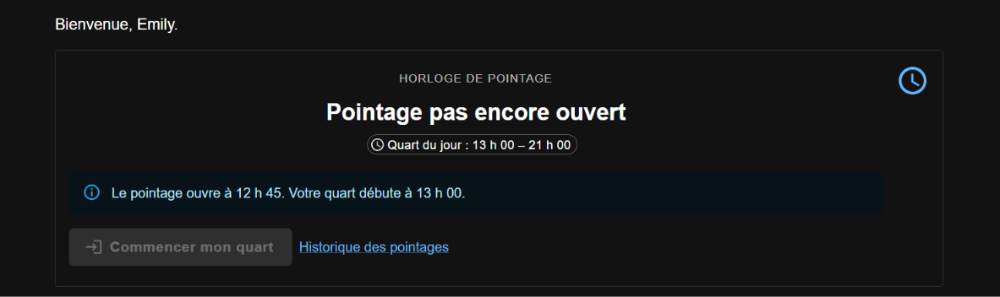
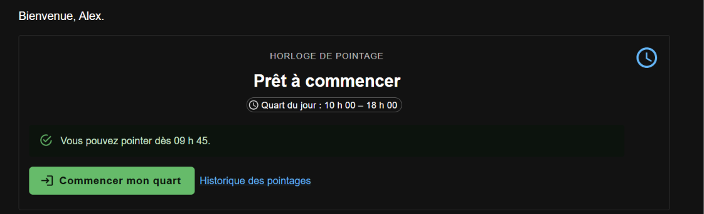
Rôles unifiés — DynamicRoleId
- Un seul champ sur l'utilisateur :
DynamicRoleId - 4 presets (Admin, Gérant, Assistant, Employé) + rôles custom
- Suppression du code Identity legacy redondant
- Admin peut créer et assigner un rôle depuis l'UI
Architecture de développement
Docker Compose local — localhost:3000 / :8080
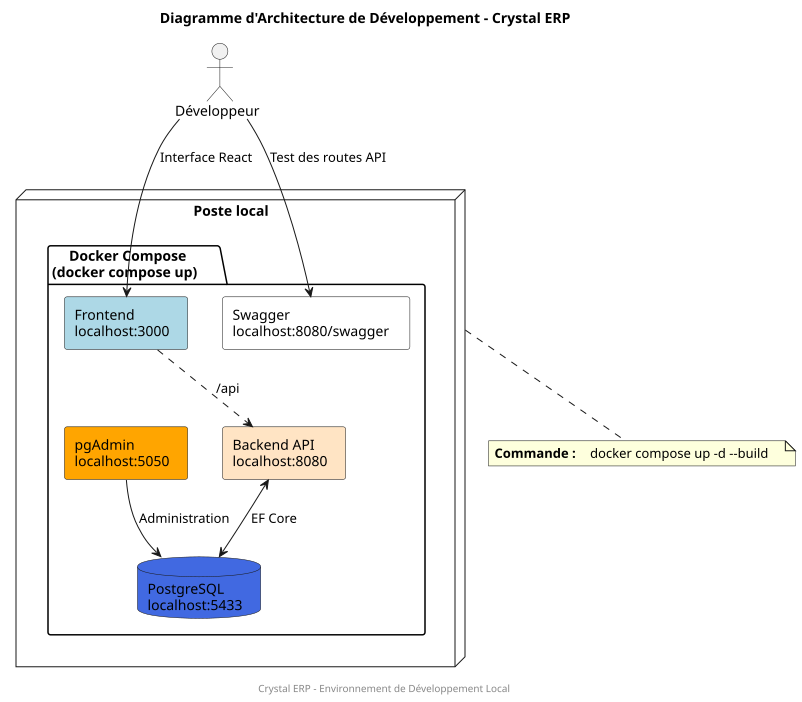
Architecture de production
Serveur crystal-server · Cloudflare Tunnel ·
dev.librairiecrystal.com
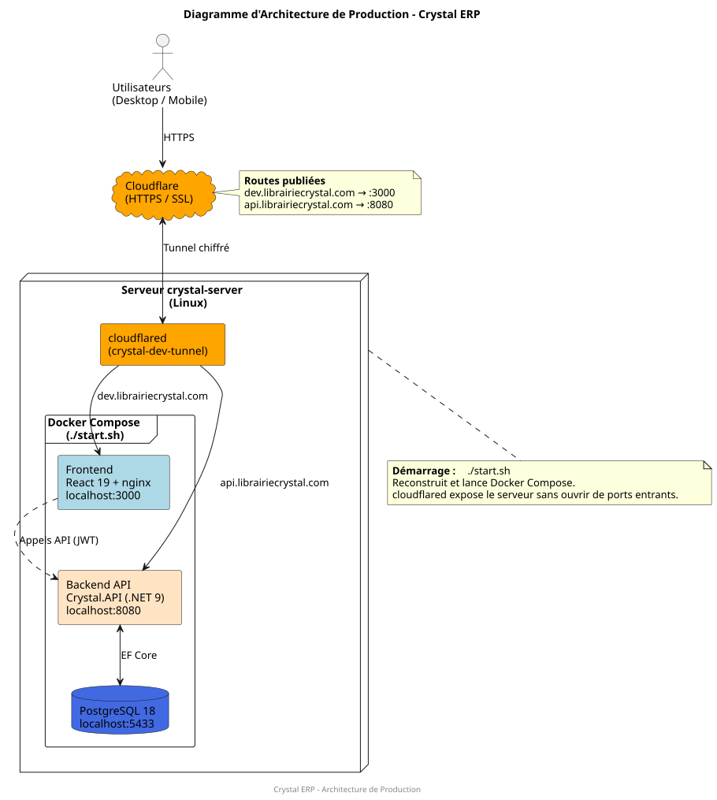
Bilan
ERP fonctionnel, déployé et accessible en ligne.
dev.librairiecrystal.com« Une API, une vérité sur les permissions — du login au bouton masqué. »
William Peck
Rôle : Frontend
Mes responsabilités :
Développement frontend / application web
✅ Travail accompli
Mise en place d'un système initial de permissions dynamiques
Divers ajustements, améliorations et corrections de bugs
Refactoring et cleanup du projet
🎯 Objectifs pour le futur
Continuer à travailler le visuel et l'utilisabilité (UI/UX)
Retravailler le positionnement des boutons dans le sidebar
Continuer à assurer la maintenabilité de l'application
Écrire des tests unitaires
Nicolas Michaud
Rôle : Frontend du site Web
Mon mandat :
Durant cette itération, je me suis principalement occupé des auteurs du site Web.
✅ Tâches et Validations
-
La page principale
Pour commencer, voici la page principale des auteurs.
-
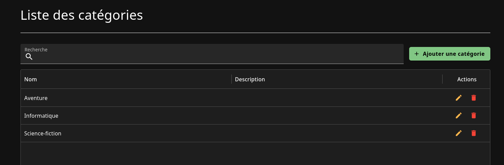
✅ Tâches et Validations
-
Affichage
Tel que mentionné à ma précédente présentation de ce que j'allais faire, nous pouvons maintenant voir la liste des produits propre à une catégorie ou un auteur.
-
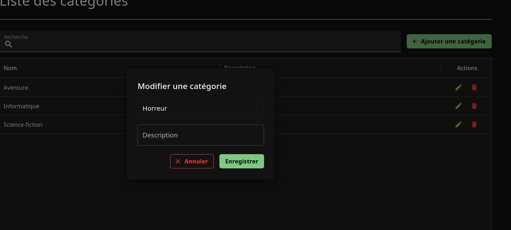
✅ Tâches et Validations
-
Le logo
J'ai également retravaillé le logo du site.
-
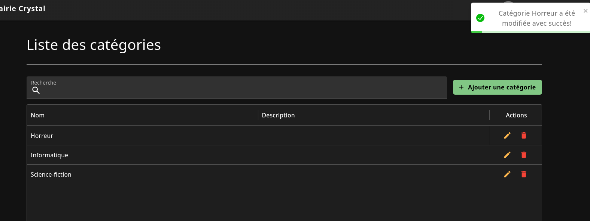
📊 Ma conclusion sur ce que j'ai accompli
État de santé (Sprint 4)
J'ai terminé tout ce qui m'a été assigné au sein de mon équipe.
Couverture : 100%
Bilan de l'Itération 4
Une itération centrée sur la stabilisation du module RH : feuilles de temps, paie et planification mieux intégrées au frontend, à l'API et aux permissions.
Ce qui s'est bien passé
- Implémentation des fonctionnalités RH
- Écrans plus alignés avec les données réelles
- Parcours feuilles de temps, paie et planning clarifiés
- Utilisation plus efficace de l'IA comme outil d'analyse
À améliorer
- Documenter plus vite les règles métier RH
- Synchroniser encore plus tôt les contrats API
- Ajouter davantage de tests automatisés sur les parcours RH
- Continuer à garder les récits utilisateurs comme priorités
Merci !
Période de questions ?